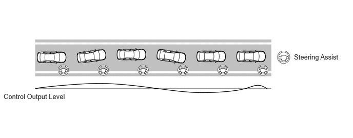
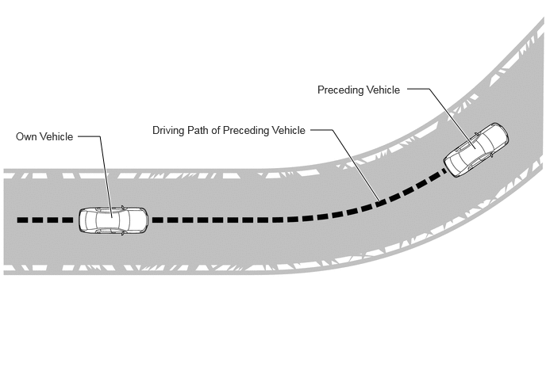
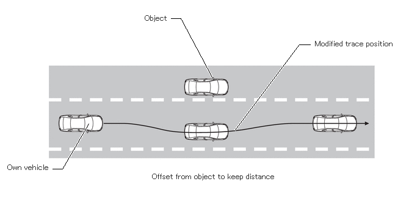
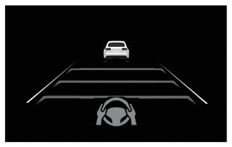
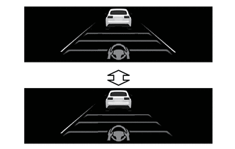
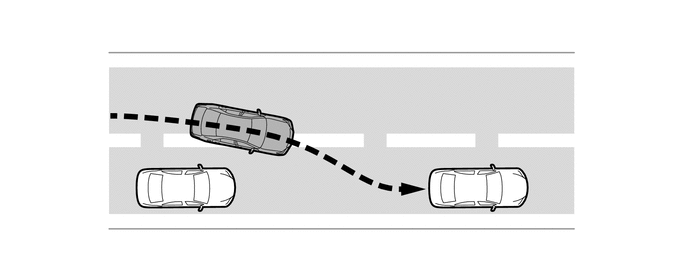
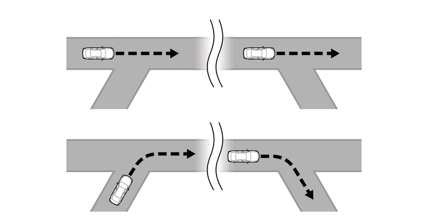

- The LTA main switch is on. (When the LTA main switch is pressed to turn on the LTA system, the LTA indicator illuminates.)
- Dynamic radar cruise control system (adaptive cruise mode) is operating.
- Dynamic radar cruise control system (vehicle-to-vehicle distance control mode) is operating.
- When the system recognizes lane markers or the path of the preceding vehicle.
- Steering assist function is not operating.
- No turn signal command is detected.
- A system malfunction is not detected.
- Acceleration and Deceleration at or above a constant speed is not detected.
- Steering operations to change the direction of vehicle travel are not performed.
- Systems related to vehicle safety, such as the VSC and pre-collision system, do not operate.
- Acceleration via operation of the accelerator pedal is not detected.
- The hands off steering wheel alert is not displayed.
- When calculation for a signal required for the function to operate has completed.
| Last Modified: 10-07-2025 | 6.11:8.1.0 | Doc ID: NM100000002GLSZ |
| Model Year Start: 2024 | Model: Tacoma | Prod Date Range: [12/2023 - ] |
| Title: ADVANCED DRIVER ASSISTANCE SYSTEM: LANE TRACING ASSIST SYSTEM: LANE TRACING ASSIST CONTROL; 2024 - 2026 MY Tacoma Tacoma HV [12/2023 - ] | ||
LANE TRACING ASSIST CONTROL
SYSTEM CONTROL
(a) Operating Conditions of Lane Centering Function
|
|
|
*1 |
LTA Main Switch |
- |
- |
(b) Operation Timing
- The lane centering function is linked with the dynamic radar cruise control system (Adaptive Cruise Mode) and provides the required assistance by operating the steering wheel to keep the vehicle in its current lane. 
- The path of the preceding vehicle is used to help the driver to follow the preceding vehicle, when traffic, etc. makes it difficult or impossible to see lane markers. 
- Under normal driving conditions, there are various situations in which vehicles move from the center of the lane to keep a distance from objects near the lane or when overtaking other vehicles. In accordance with the driving conditions, the tracing areas change to provide most suitable control support for the driver. 
(c) Suspended/Resume
- When the following cancellation conditions are met, the lane centering function is canceled.
- When the following resume conditions are met, the
lane centering function will resume. In order to
resume the lane centering function, it is necessary
for the LTA main switch to be set to on.
Suspended
Resume
Dynamic radar cruise control system (adaptive cruise mode) do not operate.
The dynamic radar cruise control system returns to normal.
A turn signal command is detected.
A certain amount of time has elapsed since the turn signal lights were turned off.
One side of lane markers or the path of the preceding vehicle is not detected.
White (or amber) lane lines or the preceding vehicle trajectory is detected.
The vehicle crosses halfway or further over a lane marker.
It is confirmed that the vehicle is driving in its lane.
Detection of the curve radius other than regulated.
A curve with a radius larger than specified is not detected.
Detection of the lane width other than regulated.
A specified lane width is detected.
Steering operations to change the direction of vehicle travel are performed.
A certain amount of time has elapsed since a steering operation with the intention of changing lanes was detected.
If the steering angle speed reaches a certain amount.
A certain amount of time has elapsed since a steering angle more than a certain amount was not detected.
Deceleration at or above a constant speed is detected.
A certain period of time has elapsed since a deceleration of more than a certain amount was not detected.
Systems related to vehicle safety, such as the VSC and pre-collision system, operate.
A certain amount of time has elapsed since system operation was suspended.
Acceleration via operation of the accelerator pedal is detected.
No accelerator inputs with the intention of increasing vehicle speed are detected for a certain amount of time.
No steering wheel operation detected.
Hands not on steering wheel is not detected
(d) System Condition
|
Condition |
Multi-information Display* |
Indicator |
|---|---|---|
| *: These illustrations are examples. | ||
|
 |
Illuminates (Green) |
|
 |
Blinks (Yellow) |
(e) Warning Messages
|
Condition |
Multi-information Display |
Indicator/ Meter Buzzer |
|---|---|---|
| *: When display changes | ||
|
Driving with hands not on the steering wheel is detected
|
Lane Tracing Assist Unavailable Soon Take Control of Steering Wheel |
|
|
Lane Tracing Assist Unavailable Take Control of Steering Wheel |
|
|
(f) Do not use the LTA system under the following conditions. Doing so could cause the system to operate improperly or could even lead to an unforeseen accident.
(1) When the preceding vehicle changes lanes while the system is displaying that this vehicle is following the vehicle (this vehicle could follow the preceding vehicle and change lanes).
(2) When driving through a junction or merging.
